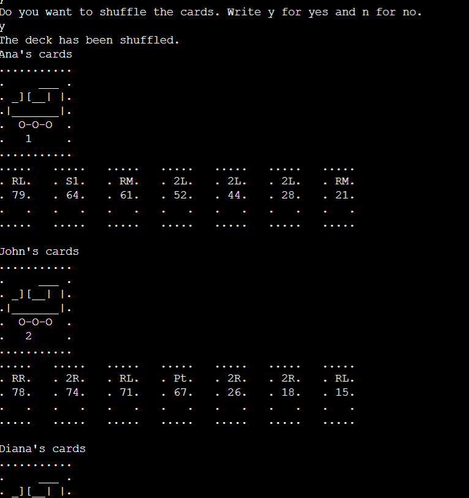
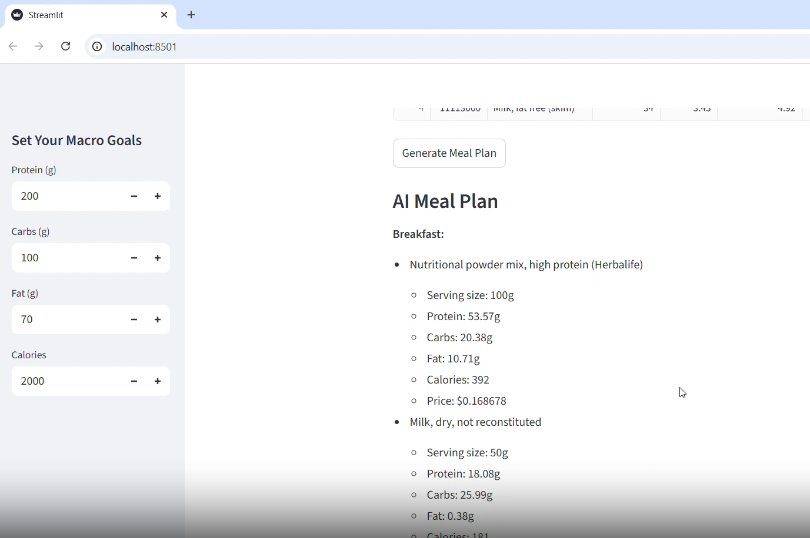
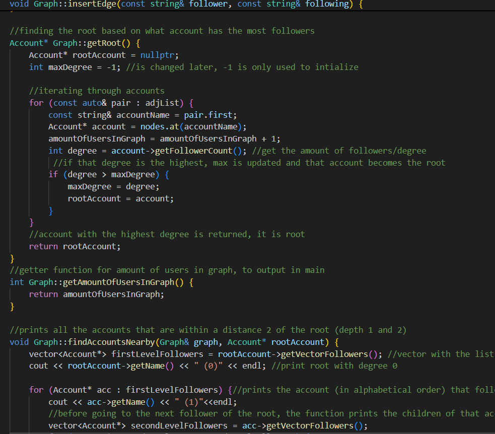
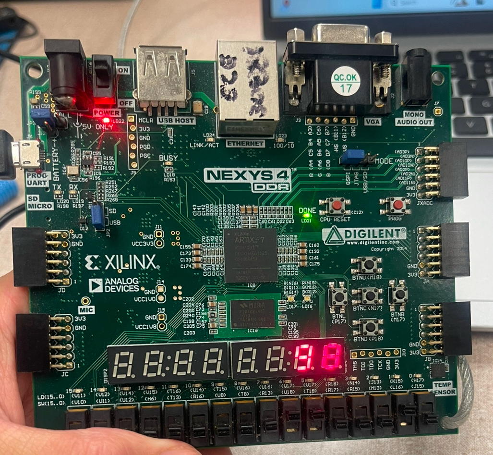
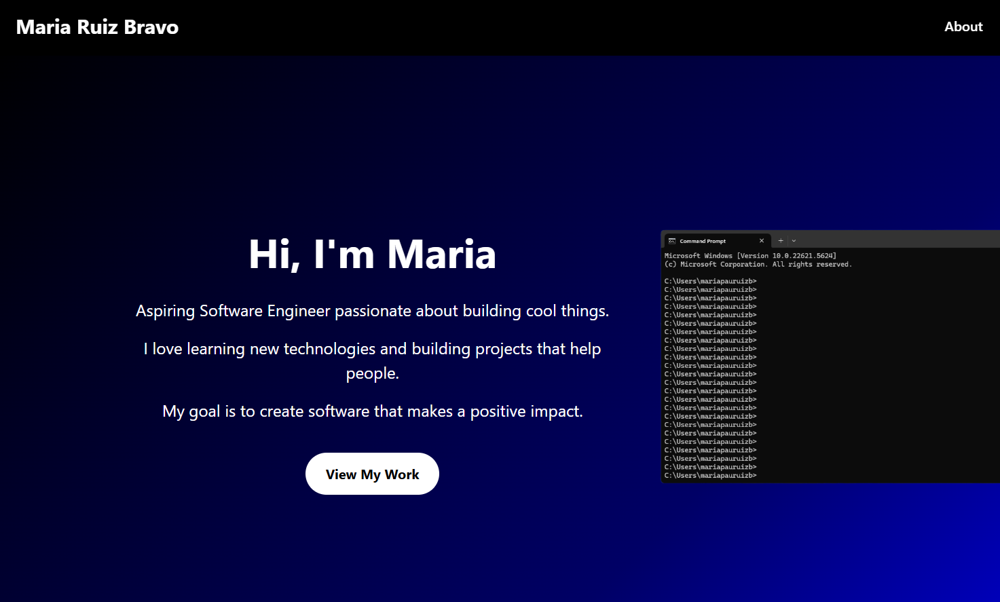
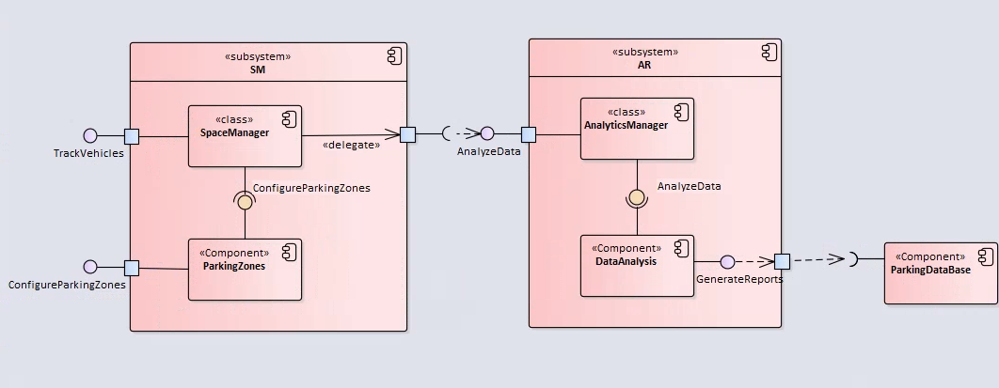
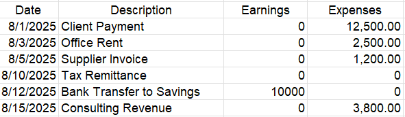

Game of Trains
Developed a C program simulating a multi-player card game with custom decks, player actions, and strategic gameplay. Implemented arrays, structures, dynamic memory, shuffle, deal, and sorting algorithms.

Nutrition & Health Data Integration
Integrated nutrition, food price, and portion datasets into a comprehensive dataset for health analytics using Python, Pandas, and NumPy. Built AWS-based pipelines for automated data ingestion and storage. Leveraged OpenAI API to generate AI-driven nutrition insights, simulating a virtual nutrition specialist.

Social Network Graph Analyzer
Built a C++ program that models a social network with graphs, identifies the most influential user, and displays nearby account connections using object-oriented design and STL data structures.

FPGA Ping-Pong Game
Designed a light pattern generator and FSM-based Ping-Pong game using Verilog on the Nexys4 DDR board. Implemented smooth gameplay logic and LED animations.

Web Portfolio Site
Built a personal portfolio website from scratch using HTML, CSS, and JavaScript. Features responsive design and interactive project showcases.

SRS Documentation with Enterprise Architect
Collaborated to create a comprehensive SRS document using Enterprise Architect to model functional and non-functional requirements, incorporating UML diagrams, system workflows, and detailed technical documentation. Awarded first-place distinction for best SRS.

Accounting PDF Data Algorithm
Developed an algorithm to extract structured tabular data from unstructured accounting PDF files. Implemented parsing logic, error handling, and data cleaning techniques to manage irregular formats and inconsistencies in financial statements.